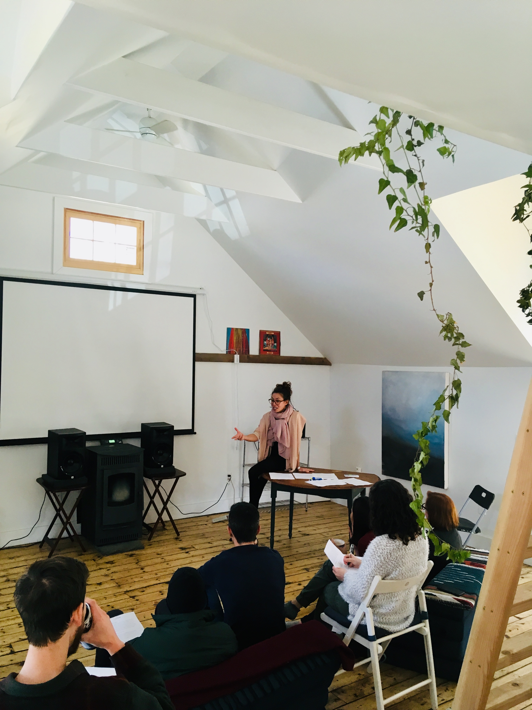

Public Philosophy
ThinkOlio: Interdisciplinary learning with the best professors
ThinkOlio is not about learning a new skill or adding credentials to your resume. It is about getting together with other people and expanding our worldview. It exists as a conduit for fruitful discussions, a dissent from the regurgitation of facts, and an embrace of new perspectives.- The Bioethics of Living and Dying: An 8-Week Course
- Stoicism Symposium: Jeanne & Massimo in Conversation
- The Tyranny of Happy: Contemporary Over-Performance
- The Good Life? An 8-week Journey
- Am I Normal?
- Cancel Culture
- Truth & Certainty
- Internet Omnipresence & Critical Thinking
- Philosophers & Pornography
- Pornography & Prostitution: Philosophers Facing the Sex Industry
- FOMO
- Freedom & Romance
- Love & Friendship
- Time
- Public Philosophy: How, Why, and for Whom?
- Buying and Purchasing Sex: The Philosophy of Prostitution
- The Fear of Leisure
- The Tyranny of Happy: On Contemporary Over-Performance
- OlioHouse | Words, Labels, & Power
- The Ethics of Lying
- Desire
- Olio Breakfast Club | Death & Bagels on a Sunday Morning
- OlioHouse Weekend | Desire & Free Will
- Philosophy Club | What Can't we Say?
- Friendship Over Romance
- Our Struggle with Free Will
- What We Call Evil
- Communities and Their Pitfalls
- Olio Series | The New Deadly Sins
- Immoral Art?
- Happiness?
- The Problem of Evil
- Questioning the Origins of Sexual Desire
CAN YOU PHIL IT?
"CAN YOU PHIL IT" is an interdisciplinary podcast which uses a philosophical lense to explore any topic: death, time, consciousness, desire, sex and gender, the nature of the world and how we can build knowledge about it; moral behavior and the nature of good and evil; the relationship between minds and bodies. For each topic, Jeanne looks back at the history of the various philosophical branches (metaphysics, ethics, epistemology, philosophy of science, social and political philosophy, aesthetics, philosophy of language), and considers positions of thinkers, dead or alive – philosophers, but also sociologists, psychologists, scientists – depending on the theme at hand.
We will reflect upon philosophical issues through discussion, when we’ll have a guest on board, and through text analysis, by critically deciphering philosophical jargon to allow our listeners to grasp intellectual contributions to the greatest, and the most seemingly trivial, questions of humankind.
We will reflect upon philosophical issues through discussion, when we’ll have a guest on board, and through text analysis, by critically deciphering philosophical jargon to allow our listeners to grasp intellectual contributions to the greatest, and the most seemingly trivial, questions of humankind.
Host and Content Production: Jeanne Proust
Music and Production: Johnny Nicholson
Visuals: Pedro Gomes
Referenced in Daily Nous.



O+ Festival: “Critical Thinking and Communities”
O+ Festival, Kingston, NY
In Collaboration with the Good Work Institute
“Composing Beauty: Mapplethorpe’s Quest for Perfection”
Co-presented by BAM and Think Olio
Led by Jeanne Proust
In conjunction with Triptych (Eyes of One on Another)
A Night of Philosophy and Ideas
I have been invited five times to participate in the Night of Philosophy. This is an excerpt from my first talk there, “On The Urgent Need For Critical Thinking”